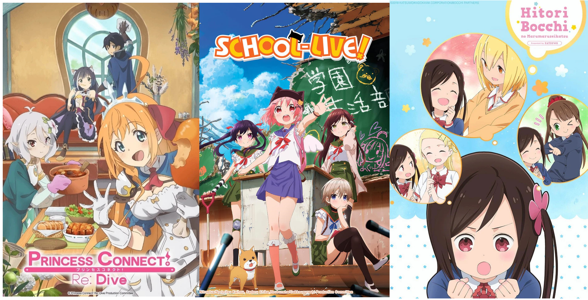

About Me
Hi, I'm Lowell.
A weeb with a dream.
A programmer and game designer who has been making games for several years now. With the power of the coding gods by my side,
I want to actualize ideas through programming and interactive experiences. I often participate in game jams to challenge myself and to try implementing new ideas,
with the goal of expanding my skillset and learn new ways of integrating solutions.
In my eyes, games are the ultimate form of media,
combining art, technology, storytelling, and music into a unique experience. Everyone has a story to tell and I hope one day, the experiences
I make will be able to reach and impact others.
I have a Bachelors of Science degree in Computer Science from CSU Channel Islands and a Masters of Science degree in Games and Playable Media from UC Santa Cruz.
Writing and Drawing
The aspects of my favorite games/anime/movies that always resonate with me the most are the enriching stories and captivating visuals.
I’ve always been drawn to story-focused and character driven games. The games I work on, I always try to create an interesting narrative to
pull players along and fun charming characters that people can enjoy.
I do short story writing, world building, and character drawing in my downtime.
AI and LLMs
With the advent of GenAI and LLMs into the public, I’ve been curious about the possibilities and potential the
technology can bring, especially into game design. I’ve played around with LLMs like ChatGPT, Gemini, and DeepSeek for various
things like coding assistance, writing and ideation, and even roleplay bots.
I have created games that utilizes AI in a meaningful and ethical way.
PLEASE WATCH THESE ANIME!!!
I need more people to talk about them with.
